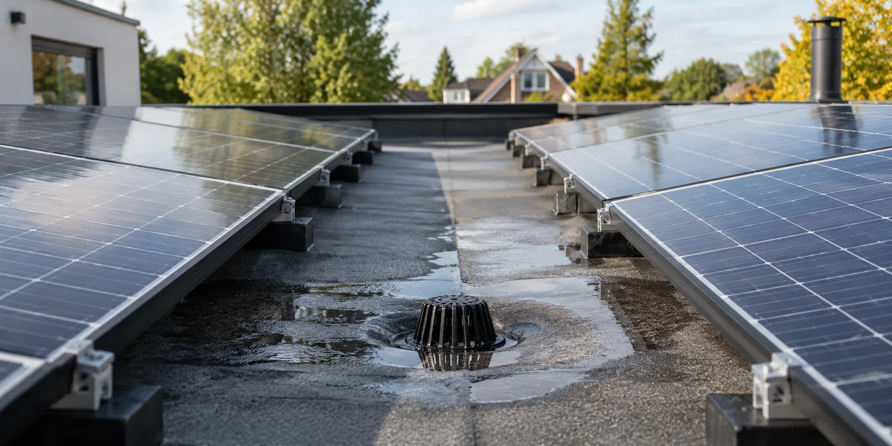

Vraag een plan van het hele dak
Laat afvoeren, dakranden, opstanden en andere voorzieningen op dezelfde tekening zetten als de panelen. Een plattegrond met alleen rechthoekige panelen is onvoldoende om de dakfunctie te beoordelen. Bespreek hoe een vakman de afvoeren kan bereiken en of bestaande onderhoudspunten bereikbaar blijven.
Laat belasting en afdichting beoordelen
Buildwise beschrijft voor zonnesystemen op platte daken aandacht voor bevestiging, isolatie en afdichting. Vraag wie de bestaande opbouw en de gekozen montage beoordeelt. De hoeveelheid ballast mag geen losse gok zijn. Laat ook toelichten hoe beschadiging van de onderliggende materialen wordt voorkomen.

Koppel montage aan een onderhoudsafspraak
Vraag wie je bij dakvragen contacteert en hoe PV-installateur en dakwerker samenwerken. Bewaar de definitieve tekening en foto’s. Als de installatie later uitgebreid wordt, neem dezelfde vragen opnieuw door. Meer panelen zijn pas een verbetering als ook de uitvoering en het onderhoud van het dak blijven kloppen.
Controleer het definitieve plan na uitvoering
De werkelijkheid kan tijdens montage afwijken van de eerste tekening. Vraag daarom een bijgewerkt plan en foto’s waarop onderhoudspunten herkenbaar zijn. Laat bespreken wie een toekomstige dakinspectie kan uitvoeren en hoe tijdelijk vrijmaken wordt georganiseerd als dat nodig blijkt. Zet toegang niet alleen als aandachtspunt op de verkooptekening, maar neem ze ook mee naar de oplevering. De eigenaar moet later weten welke route bedoeld was en welke zones specifieke begeleiding vragen.
Een legplan toont meer dan panelen
Vraag een tekening waarop dakranden, afvoeren, opstanden en andere voorzieningen herkenbaar zijn. Laat ook aangeven welke delen voor onderhoud bereikt moeten worden. Een plan met alleen een maximale hoeveelheid panelen beantwoordt die vragen niet. Geef de installateur informatie over eerder dakonderhoud en geplande renovaties. Bespreek wat de dakwerker moet beoordelen voordat de montage vastligt. De uiteindelijke inrichting ontstaat uit de combinatie van energieopbrengst en een bruikbaar dak. Een paneel toevoegen is dus geen losstaande optimalisatie als daardoor een belangrijk onderhoudspunt moeilijker bereikbaar wordt.
Belasting vraagt beoordeling van de bestaande opbouw
Op een plat dak moet de gekozen montage passen bij de constructie en de aanwezige materialen. Buildwise noemt bij zonnesystemen onder meer bevestiging en de eigenschappen van isolatie en afdichting als aandachtspunten. Vraag wie de benodigde gegevens verzamelt en wie de beoordeling uitvoert. Laat onderscheid maken tussen informatie uit oude documenten en vaststellingen op het dak. Een algemene mededeling dat het systeem geschikt is voor platte daken vertelt niet of jouw bestaande dakopbouw beoordeeld is. Vraag daarom naar de gebruikte uitgangspunten, zonder zelf een ballast- of constructieberekening te proberen te maken.
Wie kan na de installatie het dak onderhouden?
Bespreek hoe een dakwerker relevante delen bereikt en wat nodig is wanneer onderdelen tijdelijk vrijgemaakt moeten worden. Leg vast welke partij je eerst contacteert en hoe de werkzaamheden worden afgestemd. Een toegangspad op papier is pas nuttig als het na uitvoering werkelijk aanwezig blijft. Vraag dat bij de oplevering te bekijken. Vertel ook wie eerder het dak onderhield en welke afspraken daarover bestaan. Zo kan de nieuwe PV-opstelling onderdeel worden van het onderhoudsplan, in plaats van een verandering die pas bij een verstopte afvoer of een latere inspectie problemen oproept.
Vraag een vergelijking van twee bruikbare ontwerpen
Als er discussie is over het aantal panelen, laat dan twee uitgewerkte varianten zien. Beide moeten de benodigde dakbeoordeling en toegang meenemen. Vraag welk verschil in investering en geraamde productie de keuze geeft. Laat de uitkomst niet afhangen van een variant die onderhoud negeert, want dan worden geen twee gelijkwaardige uitvoeringen vergeleken. Neem ook eventuele toekomstige voorzieningen mee, zoals een uitbreiding van het gebouw. Een plan met iets minder panelen kan een bewuste projectkeuze zijn; het moet dan duidelijk zijn welk voordeel in bereikbaarheid of uitvoering daartegenover staat.
Controleer veranderingen tijdens de montage
Een definitieve opstelling kan afwijken van de eerste offerte omdat de dakinspectie nieuwe informatie oplevert. Vraag om een bijgewerkt plan en een toelichting op de verschillen. Leg onderhoudsroutes en belangrijke dakpunten vast op foto’s. Bewaar ook welke onderdelen niet bij de PV-opdracht hoorden. Als je later uitbreidt, begint de beoordeling opnieuw met de actuele situatie. Een oorspronkelijk goedgekeurd legplan is geen onbeperkte toestemming voor extra panelen of andere ballast. De eigenaar moet weten welke versie uitgevoerd is en op welke uitgangspunten die inrichting destijds beoordeeld werd.
Praktische vergelijking
| Op het legplan | Te bevestigen | Tijdens oplevering |
|---|---|---|
| Afvoeren | Ligging en bereikbaarheid | Route aanwezig |
| Montage | Bestaande opbouw beoordeeld | Uitgevoerde configuratie |
| Onderhoud | Toegang en aanspreekpunt | Praktische afspraken |
| Afwijkingen | Reden en nieuwe versie | Bijgewerkt plan bewaren |
Een praktisch voorbeeld
Een extra rij panelen bedekt de route naar een afvoer. Vraag een alternatief legplan waarin dat onderhoudspunt bereikbaar blijft. De uiteindelijke keuze is meer dan een vergelijking van het piekvermogen.
Illustratief scenario, geen klantcase.
Neem dit mee naar je gesprek
- Afvoeren op dezelfde tekening
- Toegang voor onderhoud
- Belasting van de opbouw beoordeeld
- Verantwoordelijkheid bij dakschade
Veelgestelde vraag
Bestaat er één juiste afstand tot elke dakrand?
De juiste inrichting hangt van ontwerp en omstandigheden af. Laat montage en onderhoud voor jouw dak beoordelen.
Bron en achtergrond
Buildwise: officiële of technische achtergrond bij dit onderwerp ↗
Geraadpleegd op 13 oktober 2026. De praktische checklist en het voorbeeld zijn redactionele uitwerkingen. Fabrikantinformatie geldt voor de beschreven producten; ze is geen algemene garantie voor andere systemen.
Wat betekent dit voor jouw woning?
Gebruik de calculator voor een eerste indicatie. Een vakman beoordeelt jouw situatie en bevestigt de uitvoering en definitieve prijs.
Bekijk de zonnepanelencalculator →